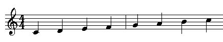

Edel´s Musikstube
Startseite
Theorie
Intervallübungen
Nach Namen
Nach Gehoer
Nach Notenbild
Intervalle nach Namen
Wir gehen in dieser Übung stets von der C-Dur-Tonleiter aus.
In dieser Übung bewegen wir uns vom c´ (eingestrichenes C bis zum c'' (zweigestrichenes C).

Erste Lektion
Erstes Intervall
Nächstes Intervall
Klicken Sie hier, um alle Intervalle auf einmal zu üben.
Geben Sie hier den Namen des Intervalls ein und gehen Sie danach mit TAB weiter:
Schreiben Sie die Namen als einzelnes Wort. Achtung: vergessen Sie nicht das "e" am Ende bei "Prime", "Sekunde", "Septime" usw.!
Das ist richtig!
Das war leider nicht richtig. Versuchen Sie es noch einmal.
 Edel´s Musikstube
Edel´s Musikstube